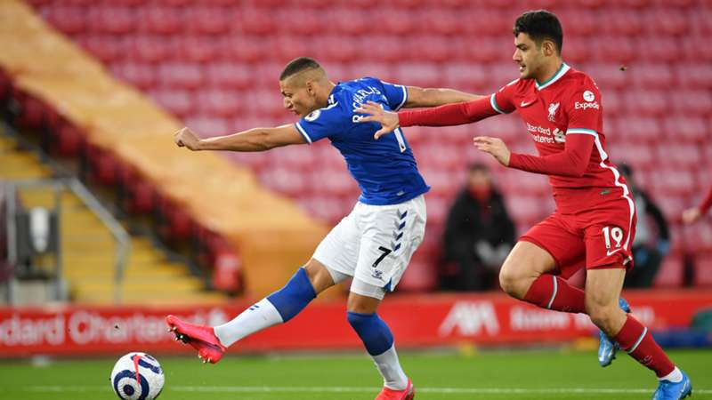

3. Phillips Solid As Substitute
In contrast to fellow centerback Ozan Kabak, who continually looked lost and was beaten for Everton’s first goal, Nat Phillips delivered a solid performance after coming on for Jordan Henderson. Unlike Henderson, who typically plays midfield, Phillips offered a better aerial presence in Liverpool’s half and came close to testing Pickford on a back-post header following a first-half free kick, but his shot hit the side netting. Additionally, Phillips distributed well from a central role and showed a decent connection with Alexander-Arnold on Liverpool’s right side. When Liverpool began to dominate the game early in the second half, Phillips also provided good cover to block attempted Everton counterattacks, highlighted by foiling Richarlison after he appeared to have an open route towards goal in the 61st minute. Despite the loss, Liverpool may have found a better partner for Jordan Henderson, or whoever replaces him at starting center back for the rest of the season.
4. Liverpool Handle Everton Press
In recent games, Liverpool, and particularly their goalkeeper Alisson, have given away sloppy goals as a result of turnovers in their own defensive third. Although Everton defended deeply for most of the game, they did make a concerted effort to attack the Liverpool defense through pressuring runs from Richarlison and Abdoulaye Doucoure. However, Alisson organized his defenders well, and he looked much more assured on the ball. Although he did not contribute many long balls forward, Alisson’s passing linked well with Thiago and Wijnaldum and provided Liverpool with an attacking platform.
5. Richarlison Improving In Center Forward Role
Due to an injury to top goalscorer Dominic Calvert-Lewin, Richarlison started for the third consecutive game as a central striker. Against Fulham last week, Richarlison posed little attacking threat, and against Manchester City on Wednesday, he exhibited effort but did not offer a consistent presence in the offensive third. However, Richarlison looked much more comfortable against Liverpool, and his direct runs without the ball threatened Liverpool’s inexperienced defenders constantly. Although he had limited opportunities due to Liverpool’s high possession numbers, he was clinical. In addition to finishing Everton’s first goal, Richarlison set up their second after he followed a clever turn with a driving run and threaded pass to Calvert-Lewin before he was fouled. While this season has been largely disappointing for Richarlison despite his team’s overall success, this performance may reignite his attacking form in the final weeks as Everton fight for a spot in European football. When asked about him following the game, Everton manager Carlo Ancelotti responded by saying “he’s back,” a dangerous sign for the rest of the league.
